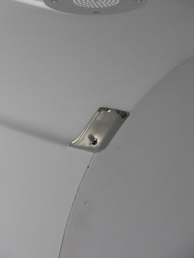

Operating Documentation
Direction 5670000, Rev# 1
Optima MR450w 1.5T Service Methods
Module Version 3.0, Version Date 12/8/09
Operating Documentation |
| Required Persons | Preliminary Reqs | Procedure | Finalization |
|---|---|---|---|
| 1 | Not Applicable | 10 mins for Rear Bore Lights, 1.5 hours for Front Bore Lights | Not Applicable |
This document contains the procedures for replacing the LEDs of the front bore lights, which are mounted on the back side of the front end bell. It also contains procedures for replacing the rear bore lights, which are accessible from the rear pedestal area.
| Item | Qty | Effectivity | Part# | Manufacturer | |
|---|---|---|---|---|---|
| Non-Magnetic Service Tool Kit | 1 | - | 5112581 | - | |
| Item | Qty | Effectivity | Part# | Manufacturer | |
|---|---|---|---|---|---|
| Front Bore Light Assembly | 1 | - | See FRU Manual | - | |
| Rear Bore Light Left-Hand Assembly | 1 | - | See FRU Manual | - | |
| Rear Bore Light Right-Hand Assembly | 1 | - | See FRU Manual | - | |
Follow all lockout/tagout procedures by turning off the applicable breaker in the Power Distribution Unit (PDU) (see LOTO for RF and PEN Cabinets and Magnet Room Electronics).
Move the patient table away from the magnet.
Remove the bridge assembly. See Bridge and Longitudinal Drive Belt Replacement.
Remove the front end bell and place on the ground. See Front End Bell Removal and Installation.
Remove the two (2) attached screws. See Illustration 1.
Disconnect the bore light assembly.
Illustration 1: Front Bore Light Assembly

Install the bore light assembly, using the two (2) screws.
Connect the cable to the bore light assembly.
| NOTE: | Make sure the 2-pin bore light connection locks into the 4-pin connector properly. Confirm that the bore light works before reassembling the system. |
Install the front end bell.
Install the bridge.
Remove the lockout/tagout tag and restore power by turning on the applicable breaker in the PDU.
Remove the three (3) attachment screws.
Gently slide the bore light assembly down the inside wall of the rear end bell (this disconnects the bore light assembly from the cable).
Illustration 2: Rear Bore Light Assembly

Slide in the new bore light assembly, making sure the cable connections mate to the cable.
Install the bore light assembly.
| NOTE: | Make sure the 2-pin bore light connection locks into the 4-pin connector properly. |
Test that the bore lights function.